# Calcular a media de mpg en función de gear
media_mpg_por_gear <- aggregate(mpg ~ gear, data = mtcars, FUN = mean)
# Mostrar o resultado
media_mpg_por_gearIntrodución a R
R é unha linguaxe de programación deseñada para a manipulación de datos, o cálculo matemático, a modelización estatística e a creación de gráficos. Tamén se pode ver como un ecosistema de software libre porque non se limita á linguaxe de programación. R abrangue un conxunto de librarías (contributed packages) en continuo desenvolvemento, que agrupan funcións orientadas a obxectivos específicos, así como documentación, entornos de desenvolvemento e comunidades que interactúan entre si.
No contexto da IA, R utilízase nas fases de exploración, preparación e análise de datos, que son pasos clave antes de aplicar calquera modelo de aprendizaxe. Grazas á súa ampla colección de paquetes, R permite limpar datos, tratar valores perdidos, transformar variables e realizar análises estatísticas exploratorias que axudan a comprender a estrutura da información dispoñible. Ademais, R ofrece ferramentas específicas para aprendizaxe automática e modelización predictiva. Por exemplo, algoritmos de aprendizaxe automática moi extendidos como GBM, XGBoost e LightGBM dispoñen de implementacións en forma de paquetes de R, o que permite aplicar estes métodos de maneira eficiente en problemas reais de análise de datos. Do mesmo xeito, R conta cun amplo ecosistema de paquetes no ámbito da intelixencia artificial explicable (XAI), que permiten interpretar modelos de aprendizaxe automática. Tamén conta con librarías que facilitan a súa integración con APIs de Large Language Models (LLMs), proporcionando complementos relevantes.
NotaEmprego de ferramentas asistidas por IA na aprendizaxe
Facer uso de LLMs como ChatGPT e Copilot para programar é, en xeral, un bo recurso cando xa sabes o que estás facendo. Non obstante, empregar este tipo de ferramentas cando se está aprendendo unha linguaxe de programación como R é realmente prexudicial para a aprendizaxe, especialmente se só copias e pegas o que che devolven. En primeiro lugar porque podes recibir código que é incorrecto. Se non coñeces suficientemente ben a linguaxe coa que estás a traballar, non entenderás o que estás recibindo nin serás capaz de corrixilo. Por outro lado, aínda que a resposta sexa correcta, estas ferramentas tenden a proporcionar solucións que empregan funcións coas que nunca traballarías se estás escribindo código en R por primeira vez. Imos mostrar un exemplo. R inclúe un conxunto de datos chamado mtcars, que contén información sobre automóviles, como o consumo de combustible (mpg) e o número de marchas (gear). Ao facer a seguinte consulta a ChatGPT ‘Dame un código R que, no conxunto de datos mtcars, calcule a media da variable mpg en función de gear’ obtivéronse dúas posibles solucións:
# Alternativamente, usando dplyr
library(dplyr)
media_mpg_por_gear <- mtcars %>%
group_by(gear) %>%
summarise(media_mpg = mean(mpg))
# Mostrar o resultado
media_mpg_por_gearSe ben as dúas opcións son correctas, ambas teñen as súas dificultades para alguén que está aprendendo R. A primeira solución usa aggregate() e a fórmula mpg ~ gear. Para un principiante, a notación con ~ pode resultar pouco intuitiva e esixirá comprender como funcionan as fórmulas en R. A segunda solución, que é máis actual e a que se adoita empregar en análise de datos moderna, require cargar unha libraría externa (dplyr) e usar a sintaxe de tubería %>%, que tamén pode non ser inmediata para quen está empezando. A solución máis sinxela para un principiante sería empregar una función básica como tapply(), que permite calcular a media ou outras medidas estatísticas de forma directa sen precisar fórmulas complexas ou paquetes adicionais.
media_mpg_por_gear <- tapply(mtcars$mpg, mtcars$gear, mean)
media_mpg_por_gearComo resumo, o coñecemento previo é esencial se queres usar LLMs para calquera tarefa, en particular, en programación. Mesmo así, os LLM son útiles sobre todo para pedir explicacións, pero non axudan tanto a aprender pois xeran respostas que simplemente parecen correctas. A recomendación é non facer uso de LLMs para a aprendizaxe de R nin para a resolución dos exercicios do curso (as respostas que parezan xeradas por este tipo de ferramentas serán sinaladas e pedirase xustificación sobre elas).
Lectura recomendada: AI, LLMs, BS, and vibe coding
Instalación de R
Toda a información relativa a R e á súa instalación pode atoparse na súa páxina web (http://www.r-project.org/) no denominado CRAN (Comprehensive R Archive Network).
O sistema R consta de dúas partes fundamentais:
- O sistema base (necesario para executar R por primeira vez).
- A colección de paquetes adicionais (contributed packages).
Para instalar R, simplemente escolle unha localización no teu ordenador e executa o ficheiro de instalación correspondente ao teu sistema operativo.
Unha vez instalado R, podes executalo e comezar a traballar. Se o prefires, tamén podes empregar RStudio (https://posit.co/download/rstudio-desktop/) como o programa principal para acceder a R. RStudio é un entorno de desenvolvemento integrado (IDE) para R. Permite integrar gráficos, táboas e documentación nun único contorno, facendo que a análise de datos sexa máis accesible.
Documentación de R
Para máis información, pódese recorrer tanto á axuda de R que se instala co propio programa (desde o menú Axuda), como aos manuais dispoñibles na súa páxina web. Existen diferentes formas de documentación en R:
Manuais electrónicos: https://cran.r-project.org/manuals.html
Unha ampla colección de libros e outros manuais sobre R:
R FAQ (preguntas máis frecuentes): https://cran.r-project.org/doc/FAQ/R-FAQ.html
Primeiros pasos en R
Ao executar R, verás que dentro da xanela (R GUI) aparece unha barra de menú, unha barra de ferramentas e a consola de R. A consola de R é o lugar no que teclearemos os comandos de R e obteremos os resultados do programa. Outra opción é crear un script (un arquivo de texto), escribir e gardar nel as funcións ou secuencias de comandos de interese. Despois, poderán executarse copiándoas na consola.
O primeiro que vemos na consola é información básica sobre R e o símbolo > (prompt), que indica que R está á espera de que introduzamos un comando.
R como calculadora científica
R permite realizar cálculos aritméticos e, nese sentido, podería utilizarse como unha potente calculadora. Os operadores aritméticos básicos son +, -, *, /, ^ para elevar a unha potencia, %% para o resto da división enteira, e %/% para o cociente da división enteira. Se nunha mesma expresión aparecen varios operadores binarios, a orde priorizada de execución é: exponenciación, produto/división e suma/resta. Para modificala, debemos recorrer ao uso de parénteses.
2 + 4 * 5 - 10 / 2^2
(2 + 4) * 5 - (10 / 2)^2Obsérvase que para a separación decimal, R utiliza o punto. Este feito pode dar lugar a problemas, por exemplo, ao importar datos de Excel onde se emprega a coma para separar a parte enteira da decimal.
Ademais das operacións elementais, poden realizarse outro tipo de operacións como logaritmos, exponenciais, raíces cadradas, funcións trigonométricas, etc. Nestes casos, debe aplicarse a función correspondente (log(), exp(), sqrt(), sin(), cos(), tan(), …) sobre o valor co que se opera.
exp(2)
sqrt(144)
cos(pi / 2)En R, os valores máis infinito e menos infinito están representados por Inf e -Inf. Se realizamos operacións para as cales a matemática non ten solución, o resultado é NaN (Not a Number).
1 / 0
-2 * Inf
sqrt(-2)
0 / 0Clases de obxectos
Nos exemplos que puxemos ata agora, todos os resultados foron numéricos. Porén, en R podemos traballar con diferentes obxectos: numeric, logical, character, list, matrix, array, factor ou data.frame, entre outros. Para coñecer o tipo ou clase dun obxecto, utilízase a función class().
a <- 2
b <- "ola"
c <- TRUE
class(a)
class(b)
class(c)Debemos ter en conta que o mesmo operador/función pode ter efectos distintos segundo o tipo de obxecto ao que se aplique. Por exemplo, se facemos 2*c, a variable lóxica codifícase primeiro cos valores TRUE = 1, FALSE = 0 e despois opera como se fose unha variable numérica.
2 * c
class(2 * c)Nas seguintes seccións imos presentar os principais tipos de obxectos que se usan en R e amosar como se crean, manipulan e combinan para realizar operacións. Aprender a traballar con estes obxectos é fundamental, porque constitúen a base de calquera análise ou modelo en R.
Vectores
R opera con diferentes estructuras de datos. A máis simple é o vector, que é una colección de elementos do mesmo tipo.
Construción de vectores
En R dispoñemos de varios mecanismos para construír vectores. A forma máis común de crear un vector é usando o comando de concatenación c().
x <- c(3.4, 23.1, 5.9, 6.7, 7)
x
class(x)Ademais de numéricos, os vectores poden ser lóxicos, de tipo carácter ou factores dependendo do tipo de variables que os formen.
y <- c("pera", "amorodo", "uva")
y
class(y)z <- c(TRUE, TRUE, FALSE)
z
class(z)En R, os vectores poden conter valores ausentes, indicados co símbolo NA. Isto é útil cando se traballa con datos incompletos ou cando algunhas observacións non están dispoñibles. Por exemplo, ao crear un vector con c() podemos incluír NA directamente:
x2 <- c(3.4, 23.1, 5.9, NA, 6.7, 7)
x2
class(x2)Se desexamos crear un vector sen asignarlle valores, podemos usar vector(), especificando a lonxitude do mesmo. Tamén podemos empregar funcións específicas dependendo da clase, como numeric() ou logical().
vector(mode = "numeric", length = 5)
numeric(5)
vector(mode = "logical", length = 5)
logical(5)En R é habitual traballar con secuencias de números, tanto para crear vectores de datos como para definir índices ou intervalos de valores. R proporciona distintos mecanismos sinxelos para xerar este tipo de secuencias, dependendo de se queremos números enteiros consecutivos ou valores igualmente espazados nun intervalo dado. Para xerar secuencias de número enteiros podemos facer o seguinte.
1:5
-3:3Cando se busca ter secuencias equiespaciadas de números dentro dun intervalo, utilízase a función seq() indicando a lonxitude desexada da secuencia ou o espazo a deixar entre dous números consecutivos.
seq(-5, 5, length = 5)
seq(-5, 5, by = 2)
NotaEmparellamento de argumentos en R
Cando escribimos seq(1, 10, length = 7), R asume que o primeiro valor introducido corresponde ao valor inicial da secuencia e que o segundo valor corresponde ao valor final. Isto coñécese como emparellamento posicional (positional matching).
Isto implica que non é necesario especificar o nome dos argumentos sempre que se introduzan na mesma orde na que aparecen definidos na función.
Porén, cando unha función ten moitos argumentos e non coñecemos a orde exacta na que están definidos, o máis recomendable é indicar explicitamente o nome do argumento que estamos a pasar. En xeral, abonda con escribir a parte inicial do nome do argumento, sempre que non se produza ambigüidade con outros argumentos. Este comportamento denomínase emparellamento parcial de nomes (partial matching of names).
Se os vectores que desexamos xerar toman en todas as súas componentes o mesmo valor (repeticións), usamos o comando rep(), indicando a lonxitude de vector desexada.
rep(9, 4)En calquera dos casos anteriores, para coñecer que parámetros e opcións ten un comando podemos utilizar args(nome_comando). Se necesitamos máis información sobre o seu uso, podemos recorrer á axuda de que dispón R a través de help(nome_comando). Como exemplo, podemos ver que argumentos ten a función numeric mediante args(numeric) ou acceder á axuda de seq() empregando help(seq) ou ?seq.
Selección de compoñentes
Diferentes subconjuntos de elementos dun vector poden ser seleccionados incluíndo, entre corchetes despois do nome de vector, un vector índice: unha expresión lóxica ou unha secuencia numérica que indica os elementos a tomar.
x[2]
x[c(2, 4)]
x[2:4]Uso de condicións lóxicas para seleccionar subconxuntos de datos
Na práctica, é habitual traballar con subconxuntos de datos do conxunto orixinal que cumpran certos criterios. Por exemplo, pode interesarnos coñecer os elementos de x que son maiores que 5. Podemos seleccionar subconxuntos utilizando condicións lóxicas en R.
O uso de operadores lóxicos con vectores é extremadamente útil. Un operador lóxico permite comprobar se se cumpre ou non unha determinada condición. Se se usa nun vector (por exemplo, nun conxunto grande de medidas), podemos obter o número de casos que cumpren a condición.
A seguinte táboa mostra os operadores lóxicos en R.
| Operador | Descrición |
|---|---|
< |
menor que |
<= |
menor ou igual que |
> |
maior que |
>= |
maior ou igual que |
== |
igual a |
!= |
non igual a |
x > 5
x[x > 5]Os operadores da seguinte táboa pódense utilizar para facer comparacións entre vectores lóxicos en R.
| Operador | Descrición |
|---|---|
& |
e lóxico |
| |
ou lóxico |
! |
non lóxico |
x > 5 & x < 10
x[x > 5 & x < 10]Comandos útiles para traballar con vectores
Existen comandos en R que están especialmente pensados para traballar con vectores. Por exemplo, para coñecer a lonxitude dun vector, emprégase a función length().
length(x)Se o que nos interesa é ordenar os valores que forman o vector de forma crecente ou decrecente, podemos utilizar a función sort().
sort(x)
sort(x, decreasing = TRUE)A continuación recóllense algúns destes comandos.
| Función R | Descrición |
|---|---|
sum(x) |
Suma dos elementos de x |
cumsum(x) |
Vector coa suma acumulada até cada compoñente de x |
prod(x) |
Produto dos elementos de x |
cumprod(x) |
Vector co produto acumulado de x |
max(x) |
Máximo de x |
min(x) |
Mínimo de x |
length(x) |
Lonxitude de x |
sort(x) |
Ordena os elementos de x de menor a maior |
mean(x) |
Media aritmética de x |
union(x, y) |
Unión dos vectores x e y sen repetir elementos |
intersect(x, y) |
Elementos comúns sen repetir en x e y |
setdiff(x, y) |
Elementos de x que non están en y |
Se realizamos operacións con vectores que conteñen NA, é importante ter en conta que moitas funcións, como mean(), devolverán tamén NA a menos que se especifique o argumento na.rm = TRUE para ignorar os valores ausentes.
mean(x2)
mean(x2, na.rm = TRUE)Operacións con vectores
En xeral, as mesmas operacións que se podían levar a cabo con números poden ser realizadas con vectores.
Operacións compoñente a compoñente
En R podemos realizar as operacións básicas sobre vectores, compoñente a compoñente.
x <- c(1, 5, 7, 11)
z <- c(1, -2, 3, -4)
x + z
x * z
x / z
(2 * x - z)^2A diferenza do que ocorre con outras linguaxes de programación, é necesario estar moi atentos a que as lonxitudes dos vectores coincidan, pois en caso contrario R non devolve un erro (aínda que si unha mensaxe de aviso) e seguirá operando coma se nada ocorrese.
aux <- c(20, 40, 60)
x + auxVemos que na cuarta componente do vector suma reciclou a primeira compoñente do vector aux, realizando a operación \(20+11=31\). Do mesmo xeito, pódense levar a cabo operacións de vectores con números. En tal caso, a operación aplícase a cada compoñente do vector.
x^2
seq(-5, 5, length = 20) + 5Operacións vectoriais
O produto de dous vectores, tal e como se coñece en matemáticas \(\sum_{i}x_{i}z_{i}\) (produto escalar), lévase a cabo co operador %*%
x %*% zMatrices
Construción de matrices
As matrices son as xeneralizaciones bidimensionales dos vectores. O comando matrix() é o empregado comunmente á hora de xerar unha matriz. Nos parámetros do devandito comando é necesario indicar as compoñentes da matriz e o número de filas e columnas. Outros comandos útiles para construír matrices son rbind() e cbind() que enlazan vectores por filas ou por columnas para construír unha matriz.
matrix(c(1, 2, 3, 7), nrow = 2, ncol = 2)
matrix(1:6, nrow = 2, ncol = 3)
cbind(c(1, 2), c(3, 7))
rbind(c(1, 3, 5), c(2, 4, 6))Nas bases de datos coas que se adoita traballar tanto en Estatística como noutras ciencias experimentais, xeralmente as filas representan a individuos e as columnas ás variables en estudo. Como consecuencia, pode ocorrer que, traballando con matrices, interésenos asignar a determinadas filas ou columnas nomes específicos. Isto faise en R a través dos comandos colnames() e rownames().
A <- cbind(c(1, 2), c(3, 7))
colnames(A)
colnames(A) <- c("Variable1", "Variable2")
A
colnames(A) <- paste("Variable", 1:2, sep = "")
AComandos para matrices
Existen comandos en R que están especialmente pensados para traballar con matrices. Existen multitude de comandos deseñados para traballar sobre matrices: diag() para extraer a diagonal, det() para o determinante, solve() que nos serve para obter a inversa (a condición de que a matriz sexa non singular), etc. Na seguinte táboa amósanse algúns dos máis empregados.
| Función en R | Descrición |
|---|---|
dim(A) |
dimensión de A |
nrow(A) |
número de filas de A |
ncol(A) |
número de columnas de A |
rownames(A) |
nomes das filas de A |
colnames(A) |
nomes das columnas de A |
t(A) |
trasposta da matriz A |
solve(A) |
inversa da matriz A |
rowMeans(A) |
medias por filas |
rowSums(A) |
sumas por filas |
colMeans(A) |
medias por columnas |
colSums(A) |
sumas por columnas |
diag(A)
t(A)
det(A)
solve(A)
A %*% solve(A)
solve(A) %*% AAdemais, eigen() permítenos obter autovalores e autovectores asociados a unha determinada matriz.
eigen(A)Operacións con matrices
Operacións compoñente a compoñente
Os operadores de cálculo comúns pódense utilizar para operar compoñente a compoñente tamén con matrices. Aquí, a diferenza do que ocorría cos vectores, os desamaños dimensionales serán reportados como erros.
B <- rbind(c(1, 3, 5), c(2, 4, 6))
A + B
C <- matrix(c(5, 3, 7, 8), nrow = 2, ncol = 2)
A + C
A * COperacións matriciais
A partir dun produto matricial de vectores (posto que un vector pódese considerar como unha matriz cunha única fila ou columna) tamén se pode xerar unha matriz. O comando t() utilízase para obter a trasposta dunha matriz (ou dun vector).
x <- c(1, 2, 3)
y <- c(4, 5, 6)
t(x)
x %*% t(x)
x %*% t(y)O produto de matrices comunmente coñecido en matemáticas realízase, do mesmo xeito que o produto vectorial que acabamos de ver, utilizando o operador %*%.
A %*% BFactores, data frames e listas
Factores
Un factor en R é un obxecto que representa variables categóricas, ordenadas ou non, e almacena tanto os valores como os niveis posibles. Pódense crear con factor().
sexo <- factor(c("M", "F", "F", "M", "F"))
sexo
levels(sexo)Data frames
Outra clase de obxectos coa que deberemos afacernos a traballar son os data frames. Un data frame é unha estrutura de datos tabular que serve para almacenar información en filas e columnas. O que diferencia aos data frames das matrices é que cada columna pode ter un tipo distinto de dato. O comando xeral para a construción de data frames é data.frame().
cbind(1, 1:5)
L3 <- LETTERS[1:3]
L3
df <- data.frame(cbind(1, 1:5), "Letras" = sample(L3, 5, replace = TRUE))
dfUnha vez creado un data frame, podemos acceder ás súas columnas, filas ou elementos concretos de varias formas:
df$Letras # Columna "Letras"
df[[2]] # Segunda columna
df[, 2] # Segunda columna
df[2:3, ] # Filas 2 e 3
df[1, 3] # Elemento da fila 1, columna 3
df[5, "Letras"] # Elemento fila 5, columna "Letras"É común que, por esixencias de determinadas funcións de R, vexámonos en ocasións obrigados a converter matrices en data frames. Analogamente ao que ocorría cos factores, a orde a executar é as.data.frame().
matriz4x4 <- matrix(1:16, nrow = 4, ncol = 4)
as.data.frame(matriz4x4)A pesar de que a contorna que nos ofrece o programa R non é a primeira vista tan atractivo como poida ser o doutros programas comerciais, R tamén nos ofrece a posibilidade de ver os datos de matrices ou data frames nun formato de celas, tal e como ocorre nestes últimos. Isto conséguese utilizando o comando fix().
fix(matriz4x4)Para que podamos continuar utilizando a consola de comandos, será necesario que de cada vez pechemos a pantalla co formato de celas.
Listas
Unha lista en R é un obxecto consistente dunha colección ordenada doutros obxectos coñecidos como compoñentes da lista. Dita compoñentes poden ser de diferente clase, dimensión, …. O comando utilizado para xerar unha lista é list() e os seus parámetros, as compoñentes da lista.
Lista <- list(marido = "Juan Pedro", esposa = "Josefina", nfillos = 3, idades = c(16, 11, 4), satisfacion = matrix(c(8, 7, 5, 4, 4, 3, 5, 10, 7, 7), nrow = 5, ncol = 2))Para acceder individualmente ás compoñentes dunha lista existen dúas vías. A primeira é a través do número de compoñente, para o que temos que utilizar o dobre corchete a continuación do nome da lista. A segunda é a través do nome da compoñente, escribíndoo a continuación do nome da lista precedido polo carácter $.
Lista[[2]]
Lista[[5]]
Lista$marido
Lista$idadesGráficos
Os gráficos representan unha compoñente moi importante en R. Mediante gráficos é posible representar unha gran cantidade de funcións estatísticas. Os comandos gráficos en R divídense basicamente en 3 grupos:
Gráficos de alto nivel. Crean un novo gráfico en pantalla; opcionalmente inclúen etiquetas, títulos, lenda, …
Gráficos de baixo nivel. Engaden información a gráficos xa existentes. Por exemplo, puntos, liñas, …
Gráficos interactivos. Permiten ao usuario engadir ou eliminar información dun gráfico de forma interactiva, así como usar o rato como punteiro ou localizador.
A totalidade de comandos e funcións gráficas que veremos aquí están incluídos nos paquetes que por defecto veñen instalados en R. Existen paquetes gráficos opcionais (e tamén gratuítos) que poden ser instalados en R, tales como ggplot2, maps, grid ou lattice, que provén ao usuario con funcionalidades máis avanzadas.
Gráficos de alto nivel
Os gráficos de alto nivel están deseñados para xerar un gráfico completo dos datos pasados como argumentos á función. Eixos, etiquetas e títulos son xerados automaticamente a non ser que o usuario esixa o contrario. Os gráficos de alto nivel sempre comezan un novo gráfico, borrando o actual se non se lles indica o contrario. En Windows, se queremos abrir unha nova xanela gráfica sen borrar a anterior, empregamos a orde windows(). Noutros sistemas operativos existen funcións análogas, como quartz() en macOS ou x11() en Linux.
A función plot()
Sen dúbida a función gráfica máis utilizada é plot(). É unha función xenérica, na que o gráfico producido depende da clase do primeiro argumento da función. Vexamos un exemplo do seu uso, onde se xera un gráfico de dispersión do peso en función da altura nun grupo de 10 individuos.
Altura <- c(175, 177, 192, 159, 166, 188, 180, 182, 177, 163)
Peso <- c(77, 70, 101, 51, 55, 87, 78, 99, 74, 50)
plot(Altura, Peso)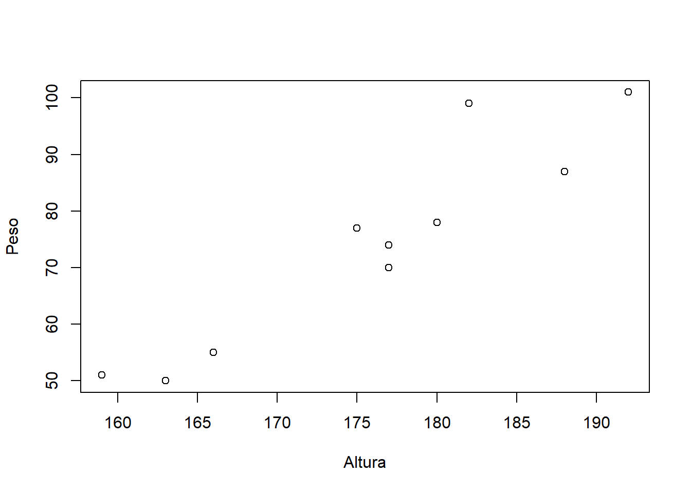
Se o primeiro dato que se lle pasa á función plot() é un factor (por exemplo, o sexo de cada un dos individuos), o gráfico que se xera é un diagrama de caixa (boxplot) do segundo dato (Altura ou Peso) para cada nivel do factor Sexo. Vexamos a continuación como se xerarían dous boxplots de cada nivel de Sexo para a Altura e o Peso respectivamente.
Sexo <- as.factor(c("H", "M", "H", "M", "M", "H", "H", "H", "M", "M"))
plot(Sexo, Altura, col = 3)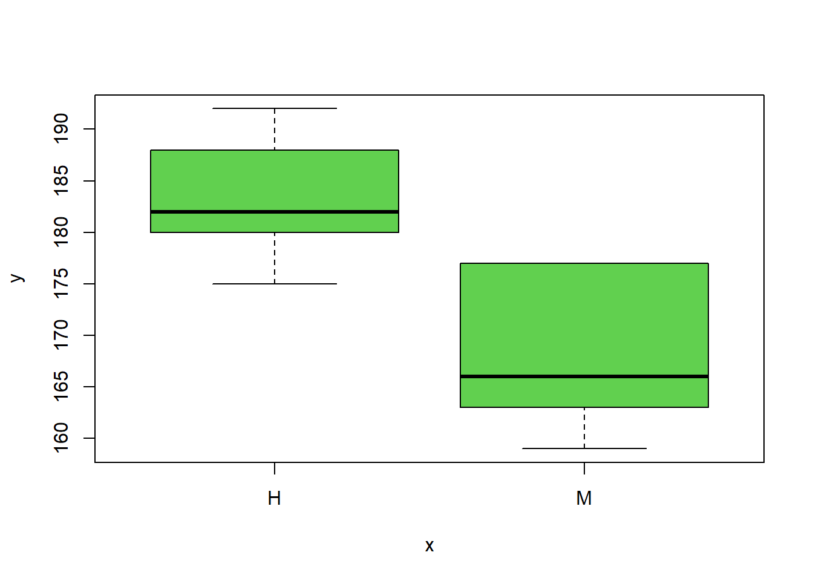
plot(Sexo, Peso, col = 4)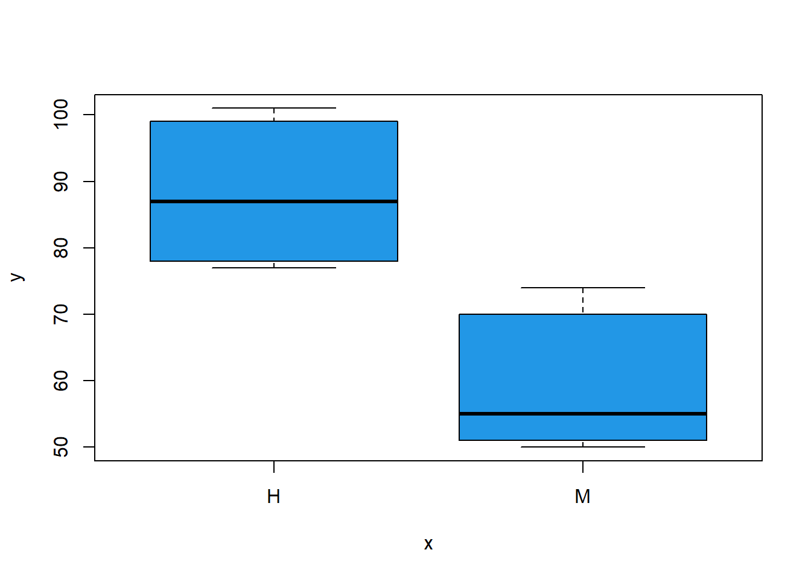
Utilizamos o parámetro col, para indicar a R a cor en que queremos o gráfico. Isto pódese facer numericamente ou ben indicando directamente a cor cunha orde do tipo col="blue".
En ocasións pode interesarnos xerar unha única pantalla gráfica que conteña multitude de gráficas diferentes. Supoñamos, por exemplo, que na mesma pantalla pretendemos incluír as tres gráficas xeradas anteriormente e ademais unha gráfica que represente a evolución da estatura media na última década (unha serie temporal).
par(mfrow = c(2, 2))
plot(Altura, Peso)
plot(Sexo, Altura, col = 3)
plot(Sexo, Peso, col = 4)
EstatMedia <- c(166.8, 168.2, 168.1, 168.9, 170.5, 170.2, 170.6, 172, 173.1, 174.2)
plot(EstatMedia, type = "l", lwd = 2, col = "cyan", lty = 3)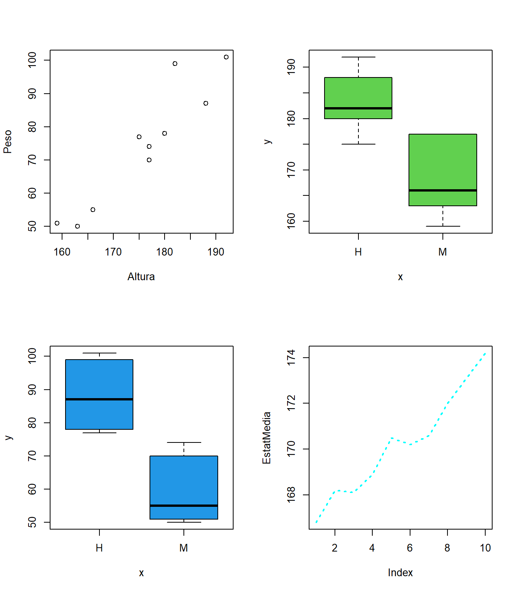
Aquí, coa orde par(mfrow=c(2,2)) estamos a indicar a R que divida a pantalla de gráficos en \(2\) filas e \(2\) columnas, de modo que podamos incluír dentro \(2 \times 2 = 4\) gráficos. Ademais, no último dos gráficos, estamos a usar parámetros que descoñeciamos: type="l" sérvenos para indicar que queremos que os puntos do gráfico se unan a través de liñas, outras opcións son type="p" (para puntos) ou type="b" (para puntos e liñas); o parámetro lty sérvenos para indicar o tipo de liña desexado, por exemplo lty=1 é a liña sólida habitual e lty=3 é a liña descontinua; co parámetro lwd indicamos o ancho de liña desexado.
Outros comandos gráficos
Aínda que a función plot() é a máis importante e a máis comunmente usada, existen outras funcións que permiten levar a cabo gráficos de alto nivel: pairs() debuxa gráficos de dispersión 2 a 2 entre todas as columnas que conforman un data frame ou unha matriz numérica; hist() debuxa o histograma dunha variable; image() crea un rectángulo a partir dunha paleta de cores onde a cor cambia en función dos datos do terceiro argumento; contour() crea un gráfico de contorno en función dos valores do terceiro argumento e persp() é o equivalente 3D ao gráfico de dispersión 2D que debuxamos antes con plot(). A continuación móstranse uns breves exemplos de uso dos devanditos comandos.
X <- matrix(sample(1:100, size = 50 * 5, replace = TRUE), nrow = 50, ncol = 5)
pairs(X)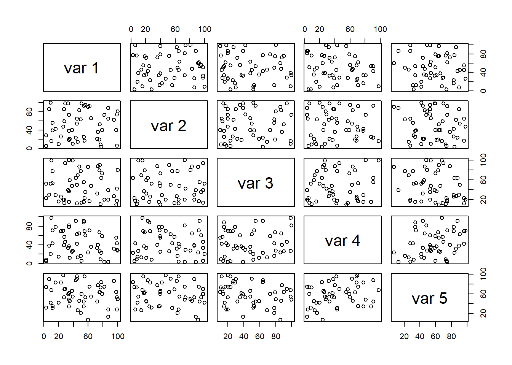
hist(Peso)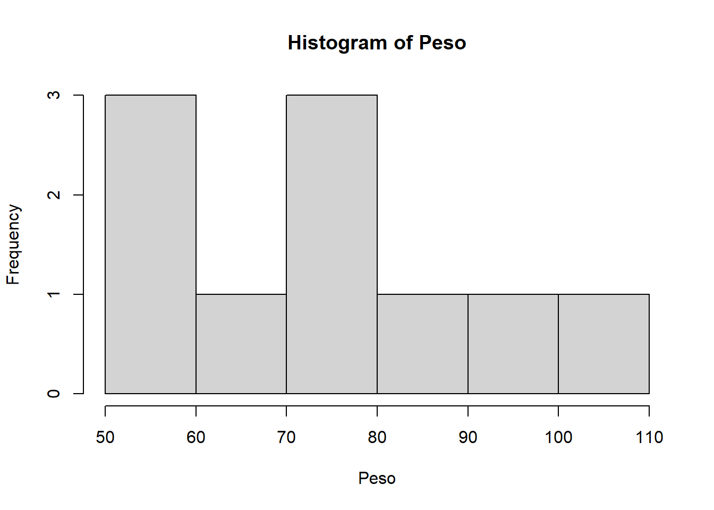
x <- 10 * (1:nrow(volcano))
y <- 10 * (1:ncol(volcano))
image(x, y, volcano, col = terrain.colors(100), main = "Volcan", sub = "Hawai, EEUU")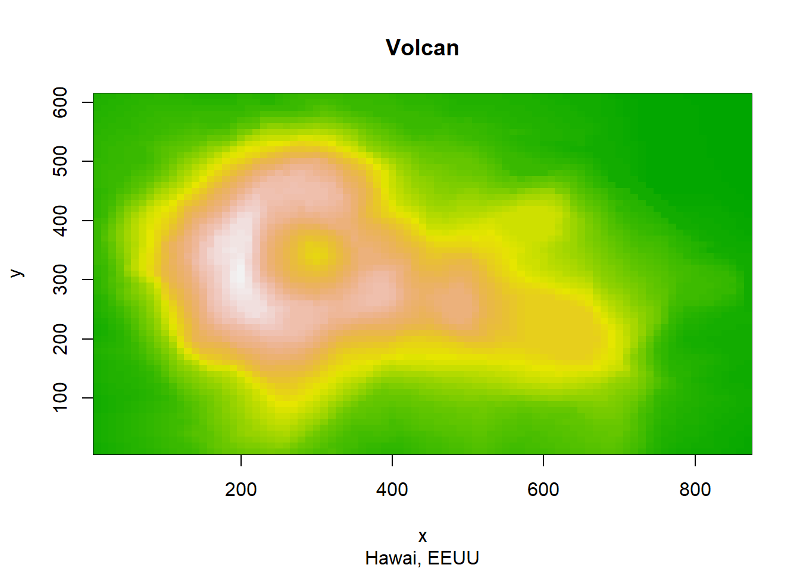
contour(x, y, volcano, col = 2:3)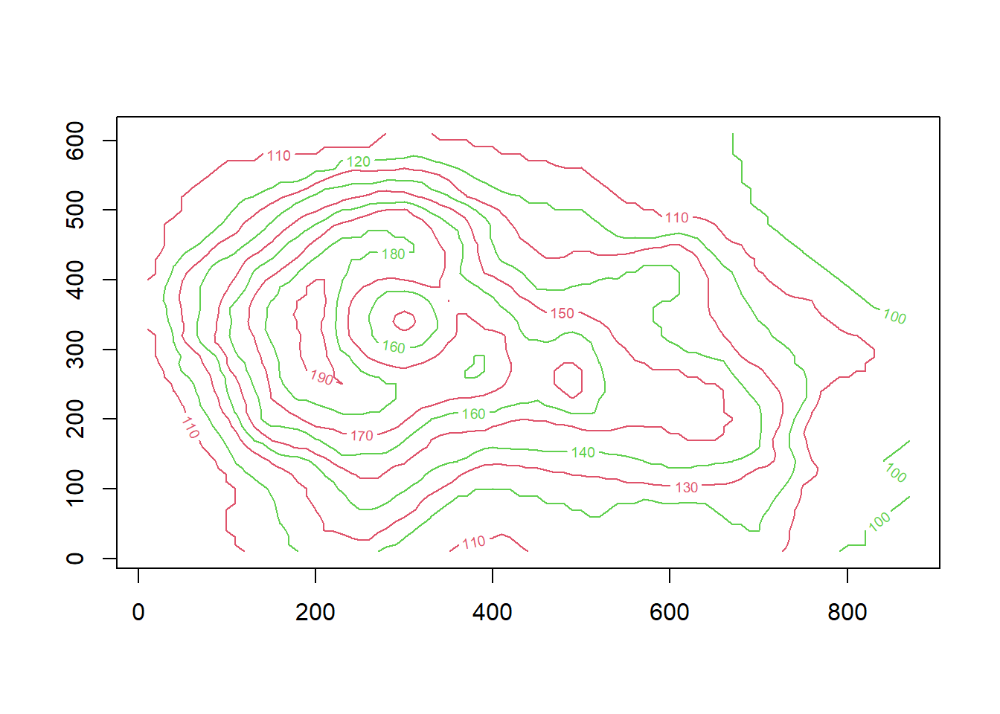
persp(x, y, volcano, theta = 30, phi = 40)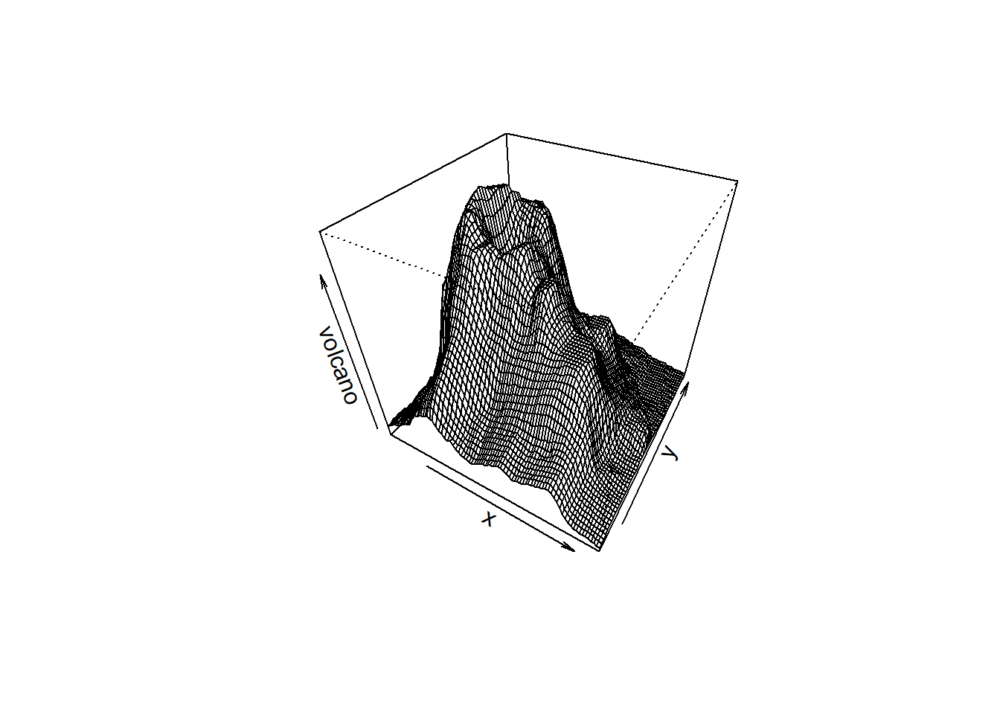
No uso que aquí damos da función image() podemos atopar un novo exemplo de parámetro que se pode aplicar sobre gráficos de alto nivel: main serve para dar un título ao gráfico, mentres que de forma análoga un subtítulo pode aplicarse a través de sub; theta e phi son parámetros de persp que nos permiten cambiar o punto de vista desde o que observamos a gráfica.
Gráficos de baixo nivel
Algunhas veces as funcións que crean gráficos de alto nivel non producen exactamente a clase de gráfico que o usuario desexa. En tal caso, os comandos gráficos de baixo nivel poden ser usados para engadir información extra ao gráfico actual. No seguinte exemplo mostramos algúns dos gráficos de baixo nivel máis comúns: a función points() permite engadir a un gráfico un ou máis puntos especificando as súas coordenadas, o parámetro pch serve para que o usuario indique como quere sinalar tales puntos (círculo sólido ou oco, diamante, triángulo, …); lines() permite engadir segmentos lineais a un gráfico preexistente, indicando as coordenadas dos puntos a unir; o comando abline() permite incluír rectas dentro dun gráfico, indicando o seu vector director e o termo independente.
plot(Altura, Peso)
points(c(165, 184), c(80, 72), col = "green", pch = 2)
lines(c(159, 192), c(51, 101), lwd = 2.5, col = 29)
abline(a = 72, b = 0, col = "red", lty = 2, lwd = 3)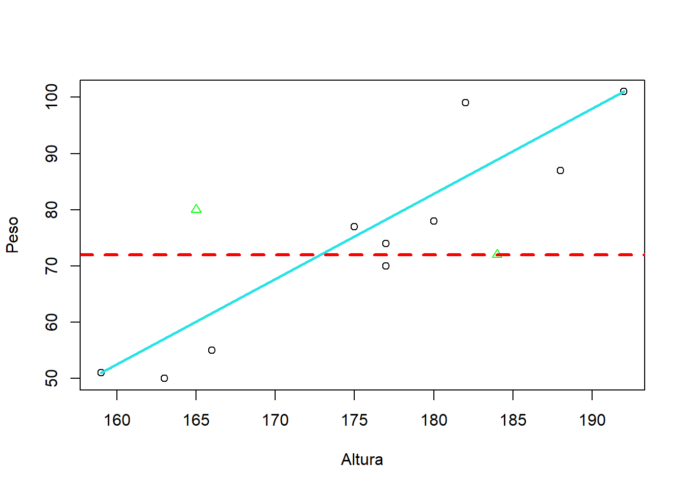
Ademais de points(), lines() e abline(), existen multitude de gráficos de baixo nivel en R. Aquí unicamente faremos referencia a dous máis: legend(), que permite incluír unha lenda nun gráfico preexistente, e title(), que permite engadir títulos e subtítulos a un gráfico xa creado, a condición de que non se fixo antes.
x <- seq(-pi, pi, length = 65)
plot(x, sin(x), type = "l", ylim = c(-1.2, 1.8), col = 3, lty = 2)
points(x, cos(x), pch = 3, col = 4)
lines(x, tan(x), type = "b", lty = 1, pch = 4, col = 6)
legend("topright", c("sin", "cos", "tan"), col = c(3, 4, 6), lty = c(2, -1, 1), pch = c(-1, 3, 4))
title(main = "Funcións trigonométricas")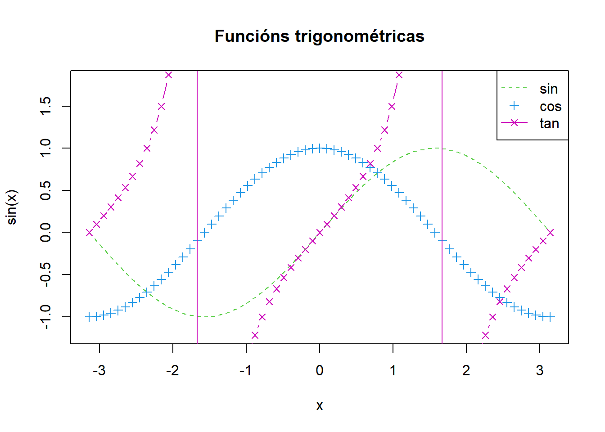
Funcións
Unha das vantaxes da linguaxe de programación R , e á vez una das claves para o seu crecemento e o desenvolvemento de paquetes e librarías, é que permite ao usuario crear obxectos do tipo función. As funcións son secuencias de comandos e ordes que devolven unha ou máis saídas, e que poden ser usadas en expresións posteriores.
A modo de exemplo, mostramos unha función cuxos parámetros de entrada son dúas vectores y1 e y2, e que devolve como saída a media e a desviación típica da résta de ditos vectores.
calculo <- function(y1, y2) {
Ry1y2 <- y1 - y2
return(list("media" = mean(Ry1y2), "desv" = sd(Ry1y2)))
}Pode observarse que un dos comandos fundamentais no interior da función é return(), que indica os parámetros de saída da función. Para chamar á función e obter a saída, o procedemento sería o seguinte.
# Xeramos x e z como vectores lonxitude 50 xerados dunha normal
x <- rnorm(50)
z <- rnorm(50)
# Chamamos á función e obtemos a saída
calculo(x, z)Na chamada á función é importante saber que non é necesario que os parámetros de entrada tomen o mesmo nome que tiñan cando se creou a función. Unha función pode ter tantos parámetros de entrada ou saída como se queira, e poden ser de distintos tipos e clases.
Ademais, no interior das funcións é habitual empregar estruturas de control como condicións lóxicas (if, else) e bucles (for, while). Estas estruturas permiten que o comportamento da función dependa dos valores de entrada ou que se repitan determinadas operacións de forma sistemática, por exemplo, ao percorrer os elementos dun vector ou ao realizar cálculos iterativos.
Cando un usuario de R crea funcións é altamente probable que se cometan erros, tanto de programación como nos posibles cálculos/ordenes que levan acabo no seu interior, e máis especialmente canto máis longa sexa a función. En tales casos, e para depurar o programa, faise moi útil o uso da función print() para escribir saídas en pantalla.
Librarías
Como xa comentamos previamente, unha das vantaxes máis importantes de R é que cada usuario pode construír as súas propias funcións, almacenalas en librarías ou paquetes (packages) e facelas públicas de modo que estean dispoñibles para o resto de usuarios. Para coñecer que paquetes están xa instalados na nosa contorna R, executamos library(). Para que un determinado paquete funcione, non só ha de estar instalado, tamén ha de cargarse na consola de R. Para saber cales dos paquetes instalados están cargados na nosa contorna, executamos a orde search().
En moitas ocasións, atopámonos con que o paquete que nos interesa non se atopa instalado en R. Para instalar un paquete, executamos install.packages("nome_paquete") . Unha vez instalado, cárgase en pantalla mediante a orde library(nome_paquete) e todas as súas funcións pasarán a estar dispoñibles.
Para obter información acerca dun paquete cargado na nosa consola, podemos facer un help(nome_paquete), ou ben descargar a axuda en pdf do paquete dispoñible en CRAN.
Importación de datos
Ata agora vimos unha forma moi sinxela de introducir datos en R: directamente mediante o teclado. Na práctica, porén, o habitual é dispoñer dun conxunto de datos almacenado nun ficheiro, nunha base de datos ou noutra fonte externa. Polo tanto, é necesario saber como importar datos en R.
Existen diferentes funcións para levar a cabo esta tarefa, dependendo do formato de entrada dos datos. Centrarémonos na importación de ficheiros de texto (por exemplo, con extensións .csv ou .txt), que será o formato empregado ao longo do curso. Aínda que R dispón de funcións específicas para importar datos desde outros formatos (por exemplo, ficheiros de Excel con extensión .xls ou .xlsx), na práctica o máis sinxelo nestes casos é converter previamente os ficheiros ao formato .csv.
Lectura de datos dun ficheiro de texto
A función read.table() é a que se usa normalmente para ler datos de arquivos externos tipo texto (con extensión .txt). O seu formato é moi sinxelo e o número de parámetros da función moi grande, tal e como se pode apreciar na axuda da mesma (tecleando ?read.table).
Un exemplo de aplicación de dita orde podémolo ver descargándonos en formato texto calquera base de datos de interese que atopemos pola rede. Podemos descargar, a modo de exemplo, a información sobre o cociente de computadores persoais por cada 100 habitantes dispoñible no Campus Virtual. A orde correcta para importar os devanditos datos a R sería:
datosPC <- read.table(file = "datos/personal_computers_per_100_people.csv", header = TRUE, sep = ",", dec = ".", fill = TRUE, quote = "\"")En file indicámoslle a R a ruta a seguir (no propio computador) para chegar ao arquivo desexado; header é un parámetro lóxico para indicar a R se a primeira fila do arquivo corresponde (TRUE) ou non (FALSE) a unha cabeceira indicando os nomes das variables; con sep indicámoslle a R cal é a separación entre variables nun arquivo (espazo, separador, coma, …). Opcionalmente, poderíanse usar calquera dos outros parámetros que aparecen na axuda, como dec, co cal indicamos a R o separador decimal utilizado no arquivo de texto de partida.
Importante: Cada vez que abrimos unha sesión de R, o programa sitúase no directorio de traballo por defecto (working directory). Este directorio de traballo é o sitio no que por defecto R le e escribe ficheiros. Para saber cal é o teu directorio de traballo actual, escribe:
getwd()Cada vez que empezas unha sesión de R, o primeiro que debes facer é cambiar o directorio de traballo ao cartafol onde gardas os teus scripts e ficheiros de datos. Para cambiar o directorio de traballo, selecciona Arquivo ▸ Cambiar dir… no menú superior e elixe o cartafol onde gardaches os ficheiros de datos. Tamén se pode cambiar o directorio de traballo co comando setwd().
A orde read.csv() é o equivalente a read.table() para importar a R datos procedentes de arquivos Excel con extensión .csv (nalgúns casos será necesario usar read.csv2()). Na axuda de R podemos atopar o seu modo de uso:
help(read.csv)Un exemplo de aplicación podémolo ver tamén a partir dos datos que xa usamos antes:
datosPC <- read.csv(file = "datos/personal_computers_per_100_people.csv")Acceso ás bases de datos de R
Ao redor dun centenar de bases de datos son fornecidas por R , ben a través do paquete datasets (que se instala por defecto con R , ben a través doutros paquetes. Podemos ver a lista de bases de datos ás que temos acceso desde R usando o comando data(). O acceso ás bases de datos que se atopan nos paquetes basee de R realízase a través do seu nome. Obviamente, antes de usar ditas bases, estaremos interesados en coñecer as súas características, para o que faremos un help() sobre o nome das devanditas bases:
CO2
help(CO2)Pode ocorrer que en determinadas ocasións esteamos interesados en dispor das bases de datos presentes en paquetes de R que non veñen instalados por defecto co programa. Se por exemplo desexamos coñecer as bases de datos no paquete rpart:
data(package = "rpart")Se, doutra banda, desexamos obter acceso á base de datos imports85 dentro do paquete randomForest, escribiremos:
data(imports85, package = "randomForest")Lembra que para que o anterior comando non de erro, debes instalar a libraría mediante a orde install.packages("randomForest")
EXERCICIOS
NotaBoletín de exercicios

NotaArquivos de datos